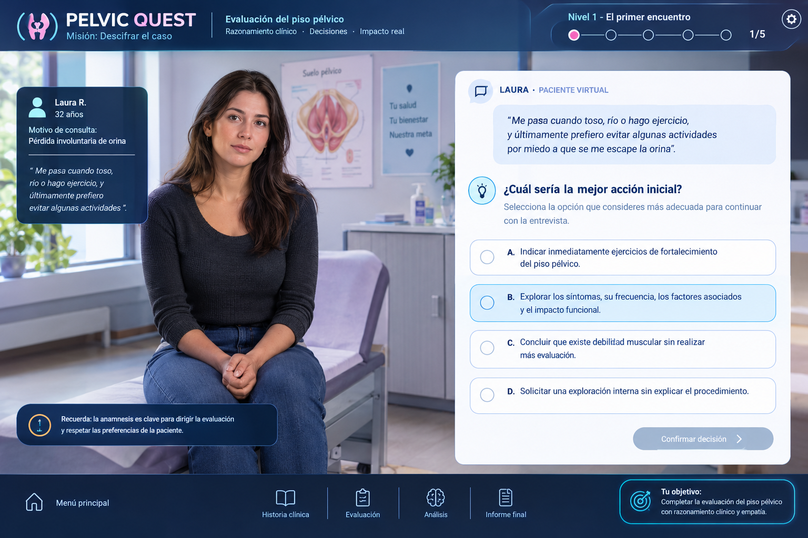

Misión: descifrar el caso · Evaluación del piso pélvico
Misión sin iniciar
🏆 0 pts
Simulación clínica interactiva
Una paciente. Muchas pistas. Tu criterio.
Asume el rol de fisioterapeuta en una unidad de salud pélvica. Entrevista a Laura, selecciona instrumentos, toma decisiones clínicas y construye una hipótesis fisioterapéutica fundamentada.
📋 Motivo de remisión
Laura R., 32 años, solicita valoración por episodios de pérdida involuntaria de orina al toser, reír, correr y saltar, presentes desde hace aproximadamente ocho meses. Refiere que ha empezado a evitar clases de baile y ejercicio por temor a que ocurra un episodio. Consulta para comprender sus síntomas, recuperar confianza y recibir orientación fisioterapéutica.
Antecedentes iniciales: dos hijos; último parto vaginal. Los datos son ficticios y se revelarán progresivamente. Aún no hay una valoración física que confirme debilidad muscular ni una clasificación definitiva.
01 · ExploraEntrevista y antecedentes
02 · EvalúaInstrumentos y pruebas
03 · IntegraHallazgos e informe
Duración estimada: 15 a 20 minutos. Incluye 12 decisiones clínicas y un tiempo orientativo de 90 segundos por pregunta. Recurso educativo; no sustituye la valoración clínica supervisada ni los protocolos institucionales.

Nivel 1 · El primer encuentro
¿Cuál es la mejor acción inicial?
Decisión 1/12
Laura R. · 32 añosPaciente virtual · Consulta de fisioterapia
LAURA · PACIENTE VIRTUAL
«Me pasa cuando toso o hago ejercicio y últimamente prefiero evitar algunas actividades».
Escucha sin asumir todavía la causa del síntoma.
🩺
ESCENA CLÍNICA · ANIMACIÓN
Primera entrevista
Escucha activa y caracterización de síntomas.
⏱ 90 s
Ritmo sugerido
¿Qué harías primero?
Misión completada
Tu informe clínico
0 / 100 pts
Integra los datos obtenidos. Esta síntesis es educativa y no reemplaza la evaluación individual ni el juicio clínico supervisado.
📚 Biblioteca clínica · fuentes verificables
Consulta las fuentes originales. La pertinencia, la adaptación cultural y las licencias de uso de cada instrumento deben comprobarse antes de aplicarlo en Colombia.
1. NICE NG123 — Incontinencia urinaria y prolapso de órganos pélvicos en mujeres. Recomendaciones sobre evaluación, clasificación de síntomas y entrenamiento supervisado del suelo pélvico. Abrir guía NICE NG123
2. NICE NG210 — Disfunción del suelo pélvico: prevención y manejo no quirúrgico. Recomendaciones sobre intervenciones conservadoras y seguimiento. Abrir guía NICE NG210
3. International Continence Society (ICS), 2021 — Terminología para la evaluación de los músculos del suelo pélvico. Marco de consenso para describir estructura y función; no reemplaza el entrenamiento ni la competencia clínica. Consultar informe ICS
4. Instrumentos a valorar para el protocolo docente. ICIQ-UI SF para síntomas e impacto de incontinencia urinaria; diario miccional para frecuencia/patrones; escala de Oxford modificada y esquema PERFECT cuando la evaluación muscular esté indicada, consentida y sea realizada por personal competente. Verificar versión española validada, permisos, manual de puntuación y población de validación antes de interpretar resultados. No se incluyen puntos de corte universales sin confirmar la versión.